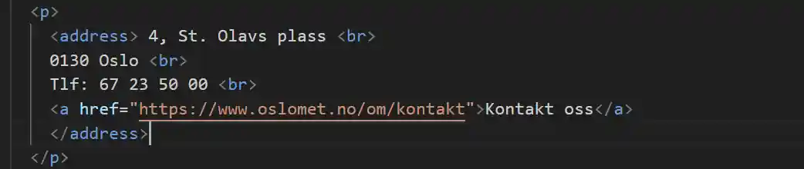

Vi brukte en automatisert test av nettsiden vår ved å bruke et verktøy som heter Lighthouse for å blant annet sjekke tilgjengeligheten til siden vår. Disse testene får med seg mange viktige punkter, men det var fortsatt viktig å gå over siden vår for å sette oss inn hvilke problemer en bruker kan møte på og hvordan man tilpasser siden til folk flest. Vi har blant annet prøvd å navigere siden ved bruk av bare tastatur og på forskjellige oppløsninger for å simulere ulike brukeropplevelser.
Tilgjengelige knapper
En av de få tilgjengelighetsproblemene Lighthouse fant var at knappene for å velge forskjellige emnegrupper var for nærme hverandre. Ikke bare valgte vi å følge rådene til testen, men vi gjorde også knappene større og endret farge slik at de er lettere å trykke på en touchskjerm, men også at man ser de mye tydeligere enn før. På bildet under kan man se hvordan knappene så ut før, og hvordan de ser ut nå:
Kontaktinfo
Et annet grep vi tok var å bruke "address" tag-en på kontaktinformasjonen i footer for å gjøre det lettere for nettleseren å tolke hva den ulike informasjonen på siden faktisk er, og for lettere navigering. Dette kan være viktig dersom en bruker har flere spørsmål om studiet og dermed kan få en raskere og enklere vei dit, spesielt om de har noen form for vansker.
Link Styling
Linkene på siden ser kanskje litt mer elegante ut uten styling og linjestreker, men vi valgte for blant annet footer å beholde linjestrekene for å gjøre det tydeligere hva som faktisk er en link og hva som er klikkbart på touchskjermer hvor aksentfargen når man har pilen over linkene ikke dukker opp. Dette mener vi er en forbedring over den originale siden.
Meny oppbygning
I originalsiden var nesten alt av informasjon gjemt bak veksellister som gjorde at informasjon kun ble synlig dersom brukere aktivt gikk gjennom og åpnet en og en seksjon. Dette kan være lite brukervennlig og omstendelig for noen. Mange av disse inneholdt også bare en setning eller to som føltes unødvendig og lite brukervennlig. For at informasjonen skal være mer tilgjengelig bestemte vi oss for å ikke gjøre det på denne måten, men heller ved å gjøre alt av informasjon tilgjengelig bare ved scrolling.
Skalering
Vi har hatt veldig mye fokus på riktig skalering på forskjellige oppløsninger. Blant annet har vi alle brukt media queries for å sikre at siden er tilgjengelig på så å si alle formater en bruker kan ende opp med å besøke siden på. Ved å for det meste bruke “em”,“rem” og “vw” unngår vi at ting går i oppløsning så fort bredden minsker som det kunne gjort dersom vi brukte faste størrelser.